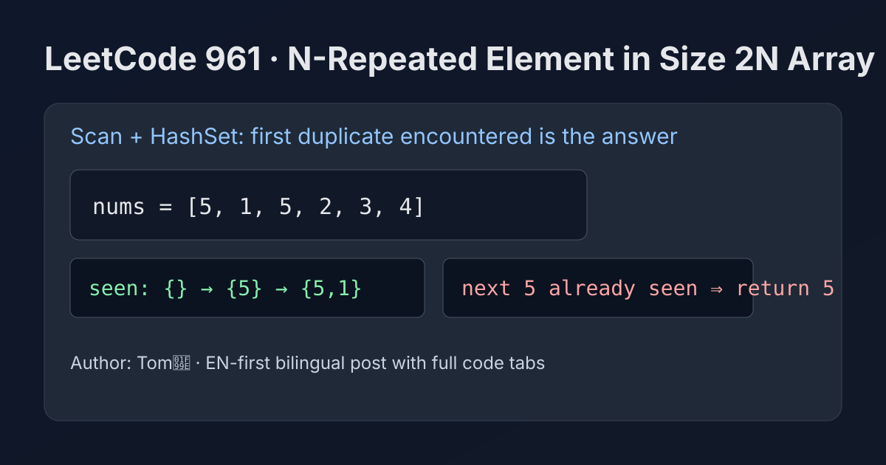

LeetCode 961: N-Repeated Element in Size 2N Array (One-Pass HashSet Detection)
LeetCode 961ArrayHash SetToday we solve LeetCode 961 - N-Repeated Element in Size 2N Array.
Source: https://leetcode.com/problems/n-repeated-element-in-size-2n-array/

English
Problem Summary
Array nums has length 2n. Exactly one value appears n times, and all other values appear once. Return that repeated value.
Key Insight
We only need the first duplicate encountered. Since all non-target values occur once, the first value we see twice must be the answer.
Algorithm
- Create an empty hash set seen.
- Iterate through nums from left to right.
- If current value already exists in seen, return it immediately.
- Otherwise insert it into seen.
- The constraints guarantee an answer exists.
Complexity Analysis
Time: O(n).
Space: O(n).
Common Pitfalls
- Sorting first (works but unnecessary extra O(n log n)).
- Counting everything before returning (can early-return as soon as duplicate appears).
- Forgetting constraints guarantee exactly one repeated value.
Reference Implementations (Java / Go / C++ / Python / JavaScript)
class Solution {
public int repeatedNTimes(int[] nums) {
Set<Integer> seen = new HashSet<>();
for (int x : nums) {
if (!seen.add(x)) {
return x;
}
}
return -1; // unreachable by constraints
}
}func repeatedNTimes(nums []int) int {
seen := make(map[int]struct{})
for _, x := range nums {
if _, ok := seen[x]; ok {
return x
}
seen[x] = struct{}{}
}
return -1
}class Solution {
public:
int repeatedNTimes(vector<int>& nums) {
unordered_set<int> seen;
for (int x : nums) {
if (seen.count(x)) return x;
seen.insert(x);
}
return -1;
}
};class Solution:
def repeatedNTimes(self, nums: List[int]) -> int:
seen = set()
for x in nums:
if x in seen:
return x
seen.add(x)
return -1var repeatedNTimes = function(nums) {
const seen = new Set();
for (const x of nums) {
if (seen.has(x)) {
return x;
}
seen.add(x);
}
return -1;
};中文
题目概述
数组 nums 长度为 2n。其中恰好有一个元素出现了 n 次，其余元素各出现一次。要求返回这个重复元素。
核心思路
扫描过程中只要发现“第一次重复出现的值”，它一定就是答案。因为其他元素都只出现一次，不可能先重复。
算法步骤
- 准备一个哈希集合 seen。
- 从左到右遍历数组。
- 若当前值已存在于 seen，立刻返回该值。
- 否则把当前值加入 seen。
- 题目保证一定有解。
复杂度分析
时间复杂度：O(n)。
空间复杂度：O(n)。
常见陷阱
- 先排序再找重复，能做但不是最优（O(n log n)）。
- 统计完整频次后再返回，实际上遇到首个重复即可提前结束。
- 忽略“恰好一个元素重复 n 次”的约束背景。
多语言参考实现（Java / Go / C++ / Python / JavaScript）
class Solution {
public int repeatedNTimes(int[] nums) {
Set<Integer> seen = new HashSet<>();
for (int x : nums) {
if (!seen.add(x)) {
return x;
}
}
return -1; // 按题意不会走到这里
}
}func repeatedNTimes(nums []int) int {
seen := make(map[int]struct{})
for _, x := range nums {
if _, ok := seen[x]; ok {
return x
}
seen[x] = struct{}{}
}
return -1
}class Solution {
public:
int repeatedNTimes(vector<int>& nums) {
unordered_set<int> seen;
for (int x : nums) {
if (seen.count(x)) return x;
seen.insert(x);
}
return -1;
}
};class Solution:
def repeatedNTimes(self, nums: List[int]) -> int:
seen = set()
for x in nums:
if x in seen:
return x
seen.add(x)
return -1var repeatedNTimes = function(nums) {
const seen = new Set();
for (const x of nums) {
if (seen.has(x)) {
return x;
}
seen.add(x);
}
return -1;
};
Comments